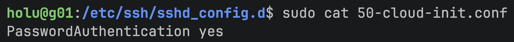

Solution
Cloud-init configuration
To create the configuration, follow the instructions laid out in Hetzner - Basic Cloud Config. The page provides the full configuration necessary to create the basic server instance via cloud-init.
Cloud-init generates its own config file 50-cloud-init.conf automatically, which enables password login by default:

To ensure the desired SSH configuration takes effect, an additional parameter has to be added to prevent password login from being enabled:
ssh_pwauth: false
Verifying the configuration
To verify the configuration was created correctly, run the schema validation:

Server creation
To create the server, log into the Hetzner Console, select a project, and navigate to the Servers tab in the sidebar.
There a server can be bought and created manually. Paste the cloud-init configuration in the Cloud config text box and buy the server.
Note:
No SSH keys were provided manually, since the configuration will add them toauthorized_keysautomatically.